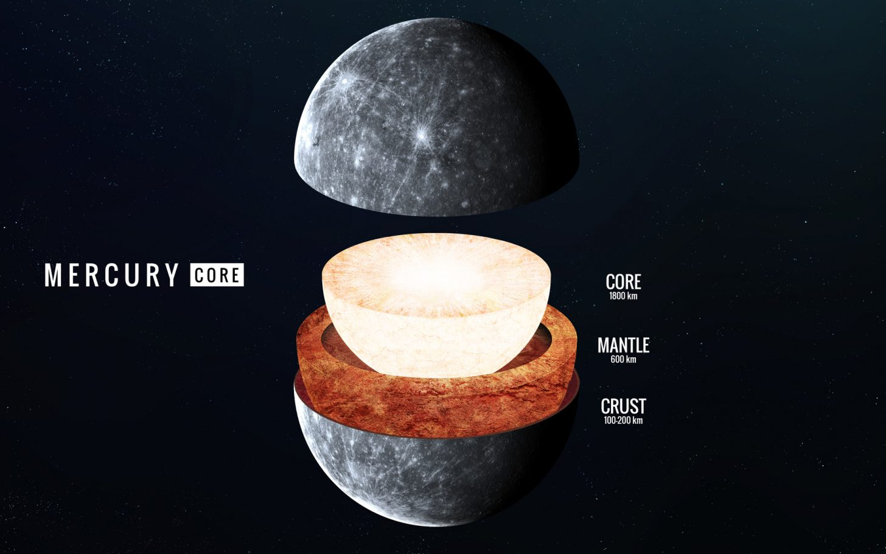

Интригующий Меркурий: раннее рождение и странная химия.
Планетологи пролили новый свет на туманное прошлое Меркурия. Дальше
Планетологи пролили новый свет на туманное прошлое Меркурия. Дальше
Меркурий, наш маленький планетарный сосед, очень мал, чтобы иметь плотную атмосферу, но у него есть странная особенность: утренние микрометеорные ливни. Дальше
Хорошо ли вам известна планета Меркурий? Проверьте свои знания! Тесты по астрономии на сайте in-space.ru Дальше